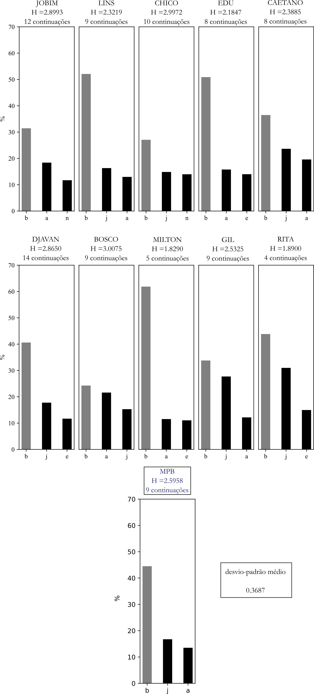

Entropia
1 Introdução
Este capítulo tem por objetivo apresentar resultados das análises referentes à medição de entropia de aspectos melódicos, rítmicos e harmônicos. Além dos valores em bits das entropias, consideremos aqui a distribuição das possíveis continuações de cada evento medido, examinado apenas as três mais recorrentes em cada evento, tomando como piso de observação o valor de 1% (ou seja, apenas as continuações mais recorrentes – acima desse limite mínimo – serão levadas em conta, o que busca filtrar os resultados mais estatisticamente significativos para a avaliação aqui proposta).
Os domínios/subdomínios estruturais considerados serão representados por eventos musicalmente mais relevantes em seus respectivos alfabetos.1 As discussões que se seguem a cada grupo de gráficos levarão em conta três conceitos que integram uma tipologia geral avaliativa.
O primeiro conceito que introduziremos é o de reflexão, que se aplica quando uma das três mais frequentes continuações de um dado evento for uma replicação desse evento.2 Uma reflexão será alta quando corresponder à primeira continuação (será mediana se acontecer nas posições 2 ou 3). Nos gráficos de entropia, a ocorrência de reflexão em uma das três continuações consideradas será indicada por uma barra de fundo cinza (continuações não reflexivas serão representadas por barras com fundo preto).
As duas outras ideias se referem à primeira continuação (seja ela reflexiva ou não). Ela será proeminente se seu percentual for igual ou maior que 50%. Por outro lado, a primeira continuação (não necessariamente proeminente, mas provavelmente, sim) será forte caso seu percentual seja ao menos o dobro do percentual da segunda continuação. O cruzamento dessas categorias torna-se assim um recurso de qualificação dos eventos.
2 Subdomínio do contorno melódico
Os sete gráficos abaixo examinam as entropias das c-letras que formam o alfabeto Ac.
2.1 c-letra u (“repetição”)
2.2 c-letra P (“passo ascendente”)
2.3 c-letra p (“passo descendente”)
2.4 c-letra A (“arpejo ascendente”)

2.5 c-letra a (“arpejo descendente”)
2.6 c-letra S (“salto ascendente”)

2.7 c-letra s (“salto descendente”)

2.8 Discussão
……………………….
3 Subdomínio do ritmo
Devido ao tamanho do alfabeto de r-letras (26 símbolos), foram selecionadas para a análise de entropia as seis r-letras mais recorrentes do conjunto MPB: j, b, e, n, r, s.^[Em conjunto, abrangem cerca de 2/3 do total do alfabeto.}
3.1 r-letra b

3.2 r-letra e

3.3 r-letra j

3.4 r-letra n
3.5 r-letra r

3.6 r-letra s

3.7 Discussão
……………………….